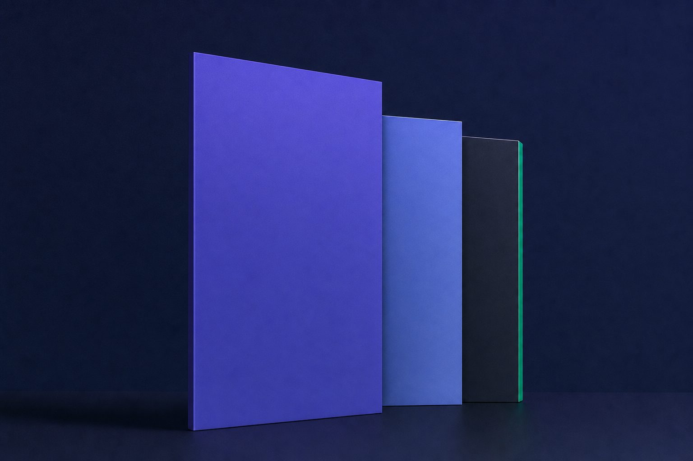
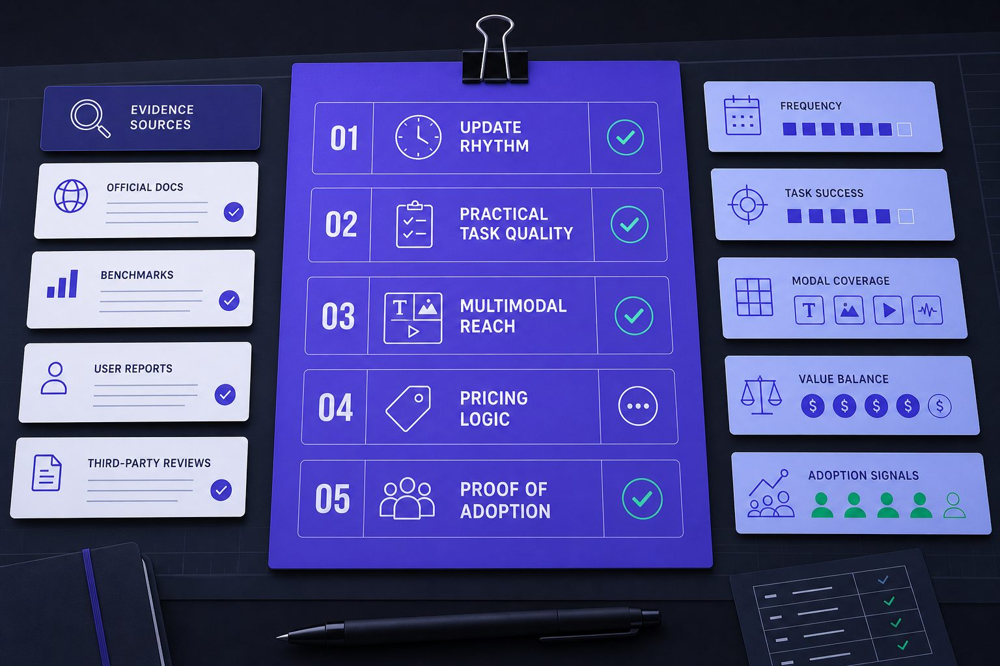
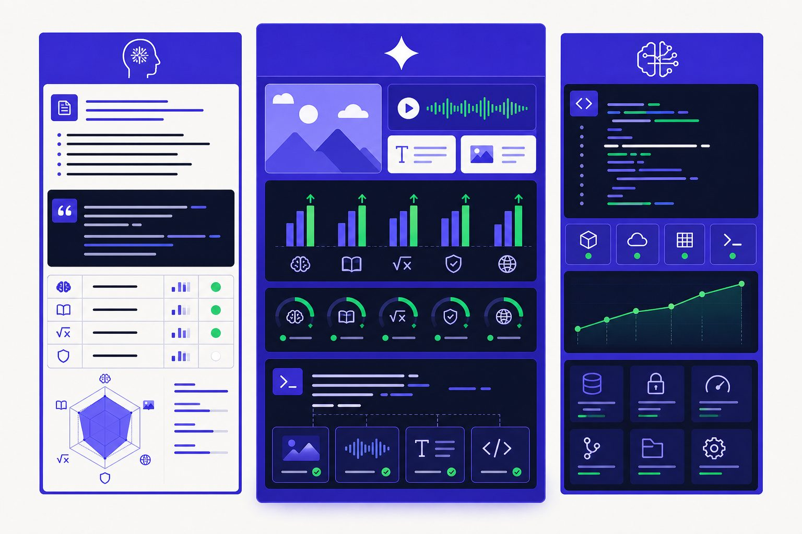
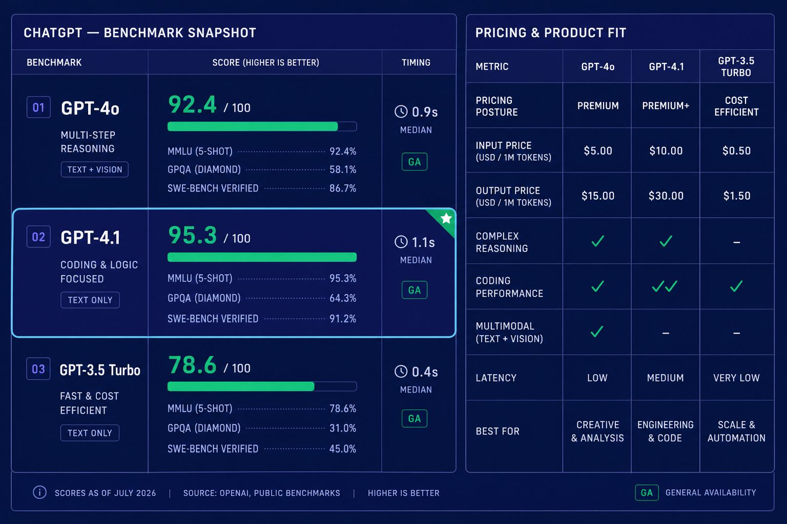
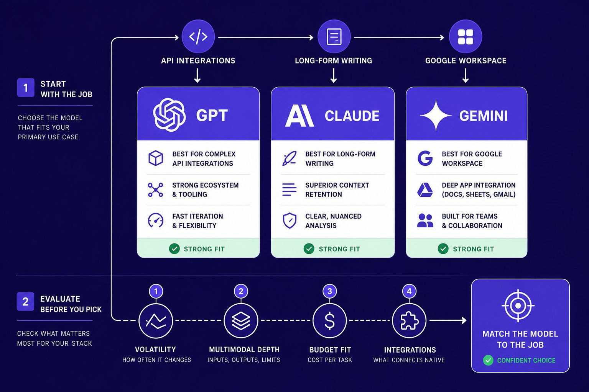

AI Comparison
GPT Compared With Claude and Gemini for Product Teams

What is the best AI model right now? GPT still anchors that debate, yet Claude and Gemini now shape almost every serious product decision. That shift matters because model gaps no longer stay stable for long. Research from Claude vs GPT vs Gemini in 2026: Production Engineer Comparison | ZTABS shows the "best model" cycle has compressed to 6 months. According to Claude vs GPT vs Gemini in 2026: Production Engineer Comparison | ZTABS, pricing differences can matter during high-load scenarios. This comparison examines GPT, Claude, and Gemini through the same lens: release cadence, benchmarks, multimodal depth, pricing, and adoption. The goal is simple: separate hype from observable product signals, then show which model fits which team scenario.
Table of Contents
GPT Comparison Criteria That Matter Most

A fair GPT comparison starts with fixed criteria, not brand pull. Each model should face the same tests: update rhythm, practical task quality, multimodal reach, pricing logic, and proof of adoption. That structure matters because the best AI model on paper can still create friction in daily work.
Release cadence and model stability
Release cadence shapes trust as much as raw capability. Product teams need steady upgrades, but they also need workflows that do not break after every major update. For example, a support team may tune prompts, routing, and safety rules around one model. They then lose consistency when a new version changes tone or tool behavior.
According to Claude vs GPT vs Gemini in 2026: Production Engineer Comparison | ZTABS, the “best model” cycle has compressed to 6 weeks. That pace rewards fast adopters. It also raises switching costs for teams that need stable outputs, audit trails, and predictable retraining.
AI benchmarking versus real world usefulness
AI benchmarking helps, but it is only one lens. Strong scores in reasoning or coding tests do not always translate into better writing, search, document review, or voice work. For example, a model may ace math benchmarks yet struggle with long PDFs, citation discipline, or nuanced brand copy.
That is why teams should compare task-level behavior. They should test writing quality, code fixes, search grounding, reasoning depth, document handling, and image or audio inputs under the same prompts. Readers comparing Claude and GPT can see that split clearly in ChatGPT vs Claude: Which Is Better for Research Work?.
Multimodal features pricing and adoption signals
Teams should also look past scores and ask what the model can actually ship inside products. Multimodal coverage, API access, enterprise controls, seat pricing, and ecosystem fit often decide adoption. Research from Claude Opus 4.6 vs GPT-5.2 vs Gemini 3 Pro: Which AI Model Should You Actually Use in 2026? shows some teams cut costs by up to 80% with model mix strategies.
The team at OpenAI demonstrates this concept clearly:
Real adoption signals matter too. Teams should track where models appear in search products, office suites, coding tools, and customer support stacks. Those signals show which systems move beyond demos and into repeatable business use.
Claude Gemini and GPT Side by Side Analysis

Claude, Gemini, and GPT now anchor most serious AI benchmarking debates. This section compares each model with the same lens. The focus stays on product reality, not brand heat. That includes writing quality, multimodal range, developer traction, and day-to-day friction.
Claude Overview Claude has built a strong reputation for calm prose, careful reasoning, and long document work. In side-by-side writing tests, it often sounds more measured than rivals, which helps research teams and editors who need fewer tone fixes. It also appeals to firms that care about safety controls and structured outputs. For related research-focused trade-offs, see ChatGPT vs Claude: Which Is Better for Research Work?.Key Features Claude stands out in long-context workflows, document analysis, and polished writing tone. According to Claude Opus 4.6 vs GPT-5.2 vs Gemini 3 Pro: Which AI Model Should You Actually Use in 2026?, Claude Opus 4.6 supports a context window of 1 million tokens. That matters for legal reviews, policy analysis, and large research packs. It also performs well in coding comparisons, though this section focuses more on product fit than raw leaderboard status.Strengths Claude's main strength is writing quality. For example, a product marketer drafting a launch memo may prefer Claude's measured tone, though teams prioritizing speed or tool integration might choose differently. Its safety posture also helps enterprise buyers who want fewer risky outputs in regulated settings. Research from Claude vs GPT-5 vs Gemini: which writes better blog content and Claude vs GPT vs Gemini in 2026: Production Engineer Comparison | ZTABS also points to strong performance in long-form writing and analysis.Weaknesses Claude’s weakness is ecosystem reach. It has fewer mainstream product hooks than Google’s suite and less developer gravity than GPT-centered tooling. That slower momentum can matter when teams need plug-ins, third-party agents, or broad workflow support. In practice, Claude can feel like an excellent engine with fewer roads around it.Best For Claude fits researchers, writers, analysts, and enterprise teams handling dense material. It works well when tone, clarity, and long context matter more than app sprawl. It is also a strong candidate for firms that rank safety and consistency above experimentation.Common Pain Points Users most often report limited integrations, uneven availability of newer features across plans, and less obvious consumer momentum. Some also find Claude less flexible for mixed workflows that combine search, voice, image, and external tools.
Gemini Overview Gemini’s position comes from Google’s distribution power. It sits close to Search, Workspace, Android, and other Google surfaces, which gives it clear utility inside existing workflows. That reach makes it attractive for companies already deep in Google Cloud or Workspace. At the same time, product naming and model packaging can create confusion during evaluation.Key Features Gemini’s feature story centers on multimodal ambition and Google integration. It can connect naturally to documents, email, spreadsheets, and search-driven tasks in ways that feel practical for office work. For example, a team reviewing campaign performance may prefer Gemini because it can sit closer to Slides, Sheets, and Drive. Sources such as Claude vs GPT vs Gemini in 2026: Production Engineer Comparison | ZTABS and Claude Opus 4.7 vs GPT-5.4 vs Gemini 3.1 Pro: Which AI Model Should You Actually Use in 2026? - WorthvieW frame Gemini as the strongest native fit for Google-heavy stacks.Strengths Gemini is often the best AI model for multimodal office tasks. Unlike Claude, it leans harder into images, documents, search context, and workspace actions. That makes it useful for product teams that already live in Google tools. It also benefits from Google’s broad platform reach, which can speed internal adoption once procurement is complete.Weaknesses Gemini’s core issue is clarity. Buyers can struggle to map model names, product tiers, and feature access across consumer and enterprise settings. That confusion raises evaluation costs, even when the underlying model is strong. Despite popular belief, the challenge is not capability alone. It is packaging.Best For Gemini fits Google-first organizations, knowledge workers, and teams that want multimodal help inside familiar apps. It works best when search, docs, slides, and collaboration matter more than standalone model personality.Common Pain Points Users often mention naming confusion, shifting product boundaries, and uncertainty about which Gemini tier does what. Some also report that outputs can vary more by surface than expected.
GPT Overview GPT remains the broadest platform story in the group. It leads in developer mindshare, tool variety, and consumer recognition. That matters for product teams because the surrounding ecosystem often decides implementation speed. GPT also benefits from frequent launches, though that pace can complicate stable evaluation.Key Features GPT’s biggest feature is breadth. It spans chat, API access, agents, coding support, image generation, voice, and a large third-party tool layer. For example, a startup building an internal assistant can often find templates, wrappers, and deployment guides for GPT faster than for rivals. Readers tracking adjacent platform moves may also find context in 8 Best ChatGPT Alternatives (2026).Strengths GPT’s strength is ecosystem leadership. Where Claude prioritizes careful prose and Gemini prioritizes Google utility, GPT offers the widest implementation path. Data from Claude Opus 4.6 vs GPT-4o vs Gemini 3.1 Pro 2026: Which AI Model Actually Wins? | Linos NEWS found a 72.5% SWE-bench result for Claude Opus 4.6, which shows GPT does not lead every benchmark. Still, GPT often wins on practical adoption because developers can deploy it across more tools and workflows.Weaknesses GPT’s weakness is evaluation friction. Pricing can feel layered, and version changes can force teams to re-test prompts, costs, and guardrails. That does not make GPT weaker than Gemini for product teams. It means the choice depends on stack fit. Teams that need broad tooling often prefer GPT. Teams centered on Workspace may lean Gemini.Best For GPT fits product teams, developers, startups, and companies that need wide integration options. It also suits fast-moving teams that value ecosystem support over perfect stability.Common Pain Points Users most often cite version churn, pricing complexity, and uncertainty about which model tier best fits production work.
GPT Benchmarking, Pricing, and Feature Table

This section gives readers the fast scan many want first. It compresses AI benchmarking, pricing posture, and product fit into one view. For a deeper research angle, see ChatGPT vs Claude: Which Is Better for Research Work?.
What the side by side table should include
A useful table should help buyers compare tools like a spec sheet, not a slogan. That means listing provider, flagship family, update pace, benchmark profile, multimodal range, pricing posture, API access, and visible adoption signals. It should also show the practical buying gaps between Claude, Gemini, and GPT.
| Provider | Flagship model family | Release cadence | Benchmark profile | Multimodal inputs/outputs | Pricing posture | API access | Visible adoption signals |
| OpenAI | GPT | Frequent model and product refreshes | Often near the top across general reasoning and coding tests | Text, image, audio, and voice workflows | Broad ladder from free access to paid consumer and enterprise plans | Mature API and broad third-party support | Strong developer tooling, major app integrations, and wide brand recognition |
| Anthropic | Claude | Steady model updates with enterprise focus | Strong writing, reasoning, and long-context results. Linos NEWS cites 88.7% on MMLU for one release comparison. | Text, files, images, and growing agent features | Premium positioning, with higher-end usage sometimes costing more | Solid API, though ecosystem depth trails OpenAI | Strong traction in research and enterprise evaluation cycles |
| Gemini | Fast launches tied to Google products | Competitive on multimodal and search-linked tasks | Text, image, audio, video, and workspace-linked outputs | Aggressive bundling across consumer and business products | Strong API plus Google Cloud route | Deep distribution through Google Workspace and Android surfaces |
In buying terms, GPT usually offers the widest subscription ladder and the deepest external ecosystem. Claude often stands out for context-heavy work and careful enterprise packaging. Gemini tends to win on bundling and native Google workflow support. For adjacent options, see 8 Best ChatGPT Alternatives (2026).
Where benchmark leaders do and do not matter
Benchmark wins matter most during shortlisting. They help teams narrow the field fast. For example, if one model leads on coding or long-context recall, it deserves a pilot.
But scores do not settle the best AI model for daily work. A model that tops a chart can still miss on latency, uptime, or workflow fit. Research from Linos NEWS shows some pricing can run 4x apart, which changes production economics fast.
Best AI Model by Use Case and Common Pain Points

The clearest takeaway is simple: there is no universal winner. GPT stands out when broad tooling, API options, and third-party integrations matter most. Claude fits writing-heavy work, long-form analysis, and teams that value tone control. Gemini makes the most sense for groups already deep in Google Workspace, Search, and cloud workflows. The smart move is to match the model to the job, not to the loudest headline.
That also means buyers should screen for friction before they commit. Model names change fast, which can make version tracking harder than feature tracking. Benchmarks help, but they often measure narrow tasks under controlled conditions. Real performance depends on consistency, latency, interface quality, and how well the system fits daily work. Pricing can also look simple at first and become murky once usage caps, premium features, API billing, and enterprise packaging enter the picture. On top of that, output quality still varies by prompt, task type, and release cycle, while some features arrive unevenly across regions, plans, or devices.
A better selection process starts with four questions. First, how much update volatility can the team absorb without constant retraining? Second, does the work require strong multimodal depth, such as voice, image, document, or live web inputs? Third, what budget limits apply across both subscriptions and scaled usage? Fourth, which integrations are non-negotiable, from office suites to developer tools to internal systems? Teams that answer those questions honestly tend to make better choices than teams chasing leaderboard snapshots.
In the end, the best AI model is the one that fits the workflow, budget, and risk tolerance in front of it. Hype fades quickly. Operational fit lasts longer. As model families keep shifting, readers, researchers, and product teams should treat AI benchmarking as one input, not the final verdict. Want to learn more? Learn More to explore how we can help.